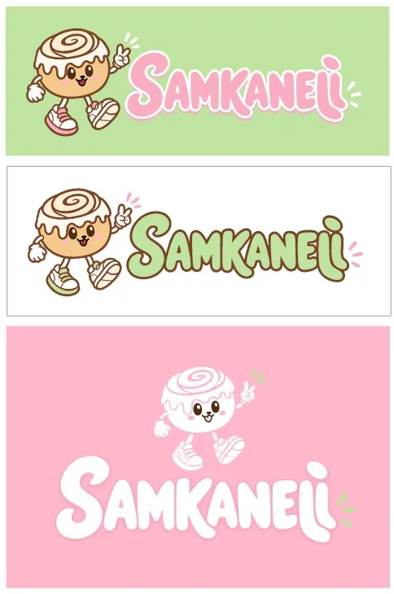
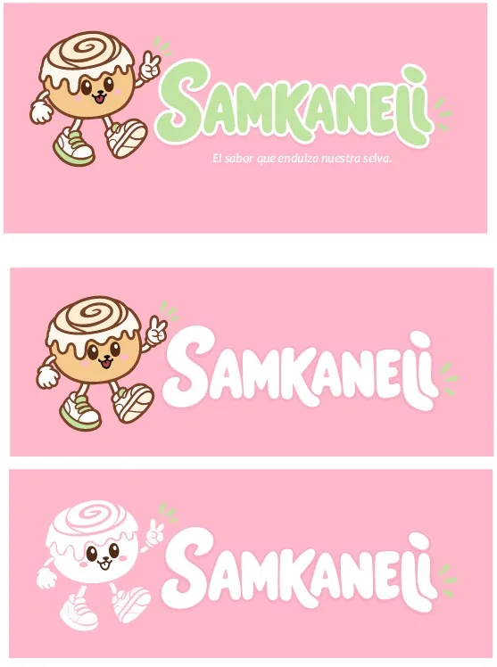
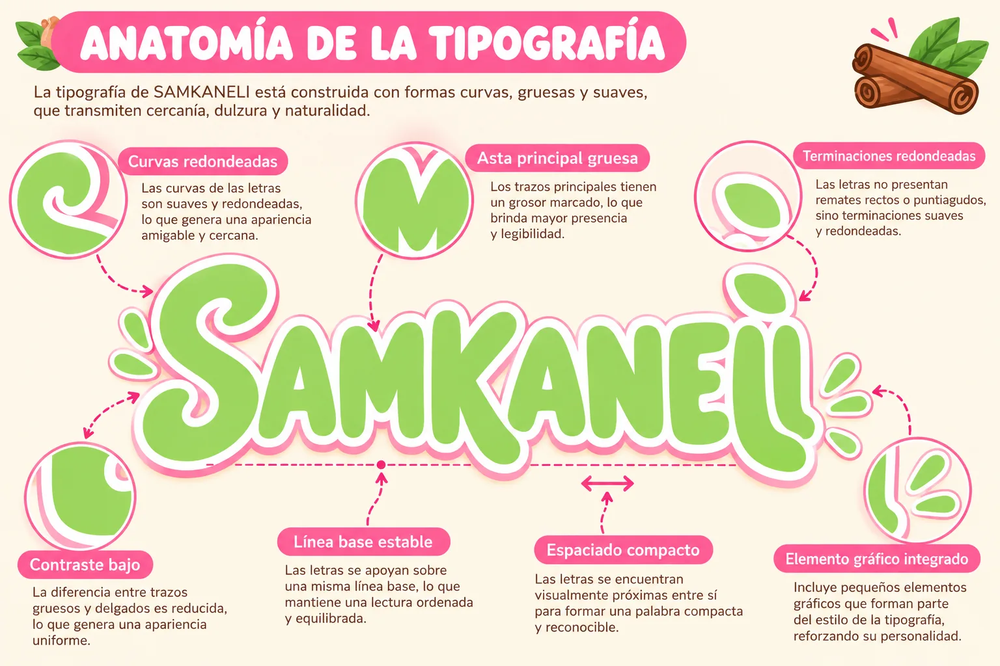

Rosa pastel
Dulzura, alegría y cercanía
- HEX
- #FAADC0
- RGB
- 250 · 173 · 192
- CMYK*
- 0 / 7 / 5 / 0
Inicio › La marca › Identidad visual
Identidad visual
Todo lo que se ve de SAMKANELI en un solo lugar: logotipo, mascota, paleta, tipografía y cómo usarlos sin perder la esencia.
Según la ficha, el imagotipo combina el nombre SAMKANELI con una mascota en forma de rollo de canela, que representa el producto principal.
Este análisis describe el arte original. No se redibujó ni se alteró.
Versiones
Todas existen en los archivos del proyecto. Pulsa una imagen para ampliarla.


Fondos
La versión transparente probada sobre los colores de la paleta.
Recomendación propuesta Prueba de legibilidad: el contorno blanco de la versión transparente mantiene la lectura sobre los cinco fondos.


Un rollito con personalidad: sonríe, camina y lleva sobre la cabeza las frutas de la región.
Paleta cromática
Crema para descansar, marrón para el contraste, rosa para la dulzura y verde para la selva.
Dulzura, alegría y cercanía
Calidez y tradición
Suavidad y dulzura
Naturaleza y origen regional
Recomendación propuesta El rosa y el verde pastel no tienen contraste suficiente para escribir sobre crema. Para textos pequeños se usan versiones más oscuras, sin cambiar la paleta oficial:
#A5306A
Verde para texto
#3F6B2A
Redondeada, gruesa y fácil de leer, de estilo display, para transmitir dulzura y cercanía.
La ficha la llama «Sans Serif Samantha». No se pudo confirmar la fuente exacta: el nombre de marca parece lettering propio, por lo que el archivo del logotipo es la única referencia fiable.
Fredoka · titulares
Nunito · textos de lectura
Recomendación propuesta
Fuentes gratuitas de Google Fonts, compatibles con el estilo. Se cambian en
global.css
(variables
--f-display
y
--f-body
).



Elementos gráficos
Recursos que acompañan al logotipo.
Sello de eslogan
Espiral y hojas aquí mostradas son recursos de apoyo propuestos para la web, inspirados en el producto. No sustituyen al logotipo.
Usos
Cuidar estos detalles mantiene la marca reconocible.
Recomendación propuesta Reglas propuestas para el manual básico; aún no están aprobadas como normas oficiales.
Escalas
El mismo recurso a cuatro tamaños reales.
Recomendación propuesta El nombre completo pierde legibilidad en tamaños pequeños. Para favicon y avatares conviene usar la mascota sola; una versión simplificada específica sería una propuesta por diseñar y aprobar.
Composición
Mockups conceptuales que combinan logotipo, color, mascota y fotografía.